Index / Item 1
Permanent roofline lighting for homes in the Salt Lake Valley. It started as a rebranded open-source app and grew into its own controller board, firmware, and software, plus the tools the sales team uses to sell it.
What goes on the house. The pieces below are what Shane built to run it and sell it.
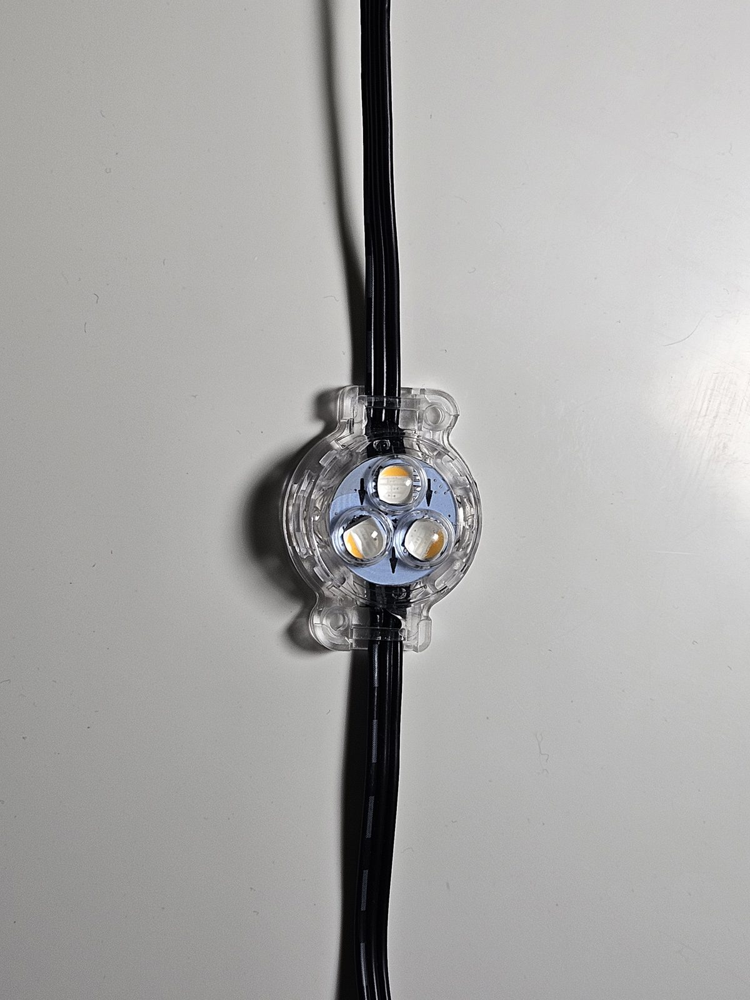
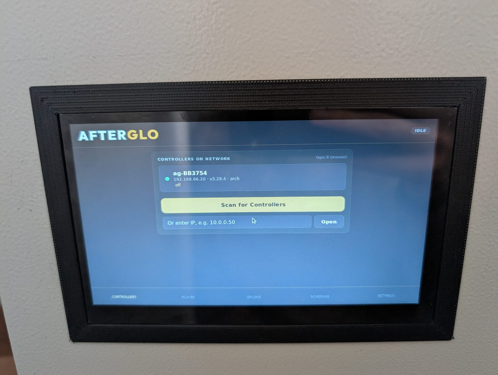
AFTERGLO jobs, from the company website.
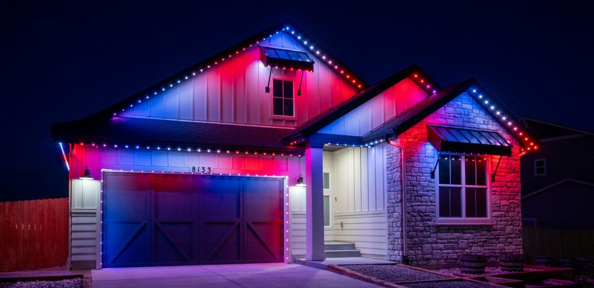
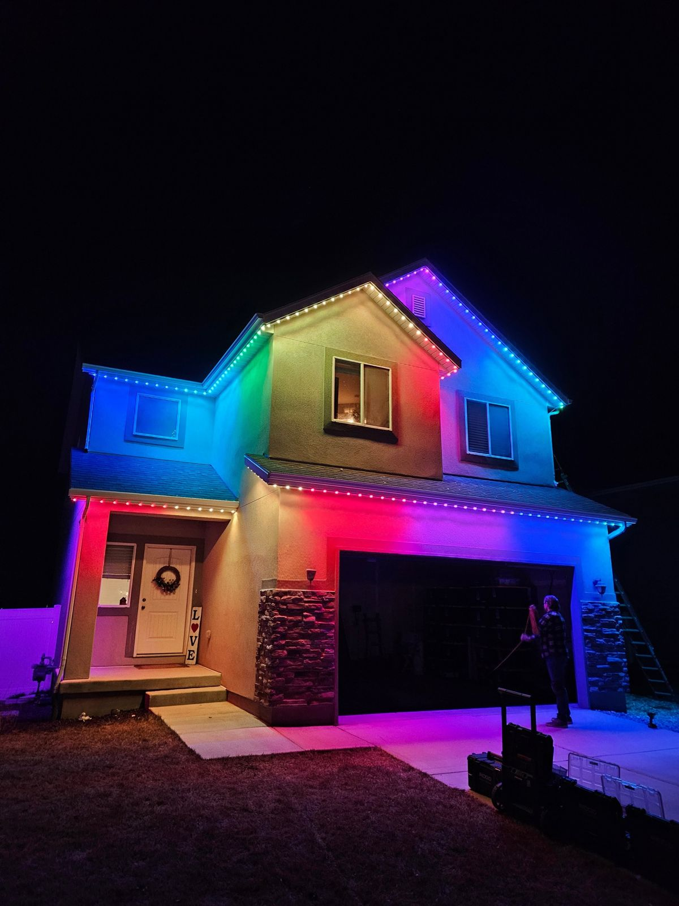
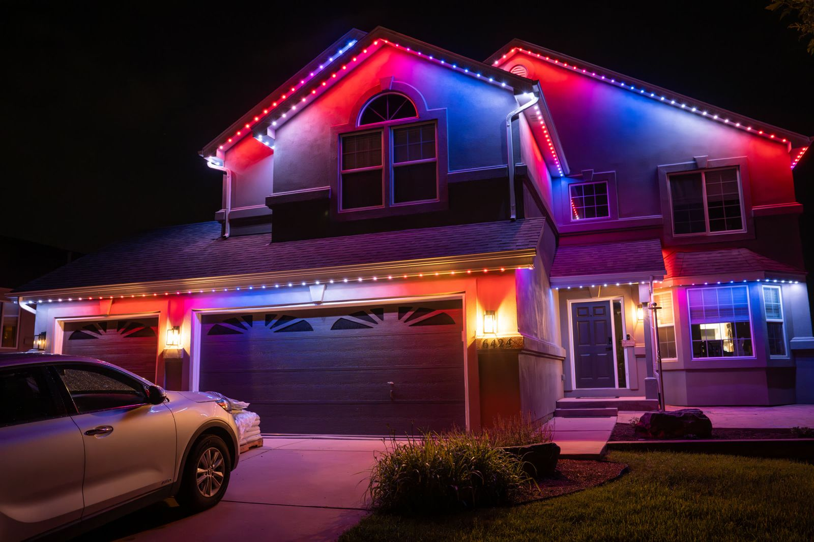
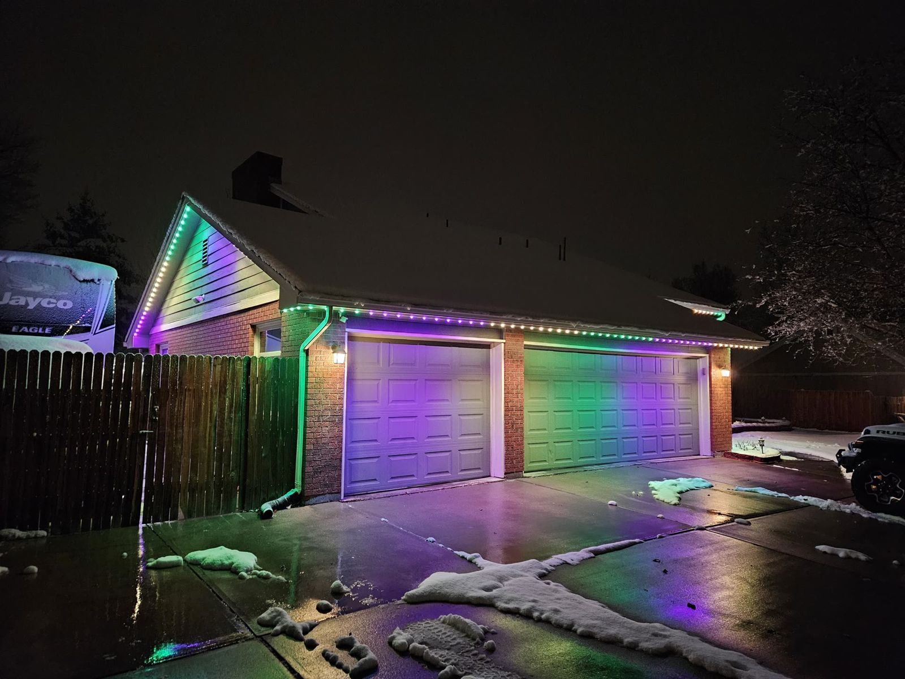
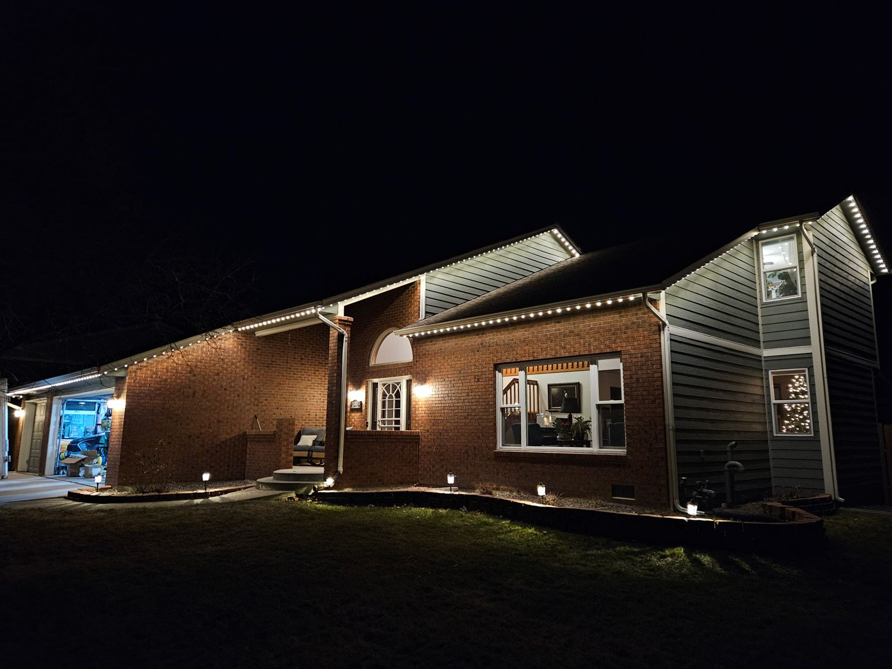
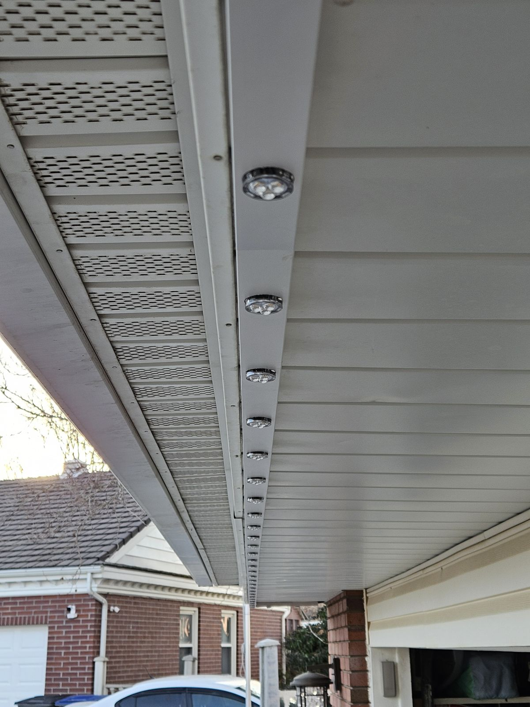
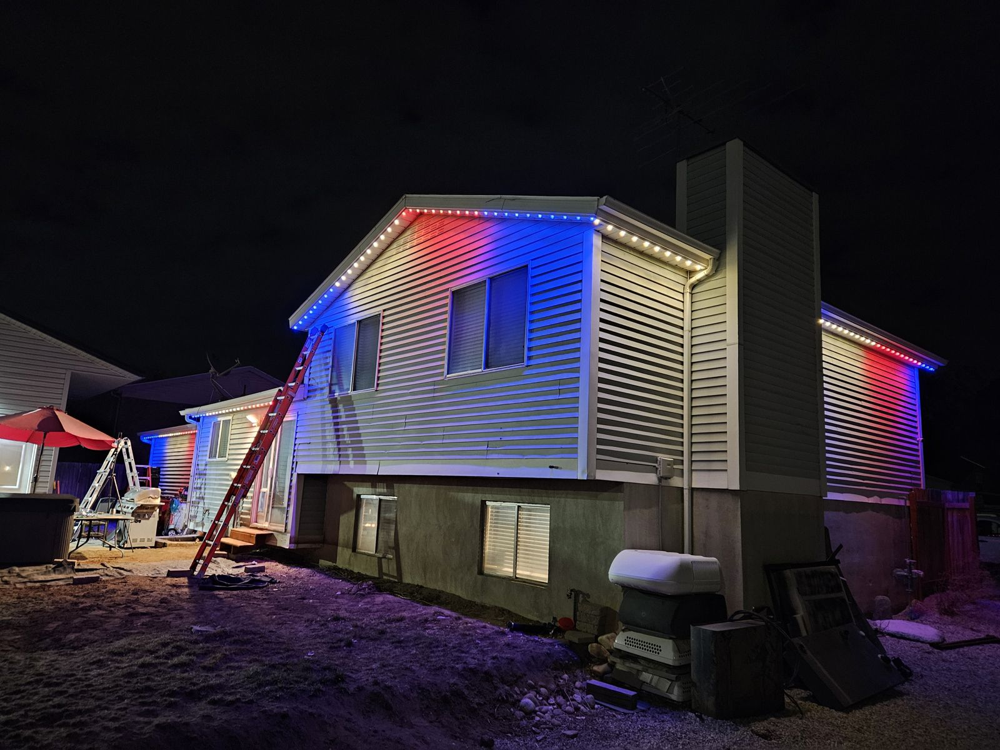
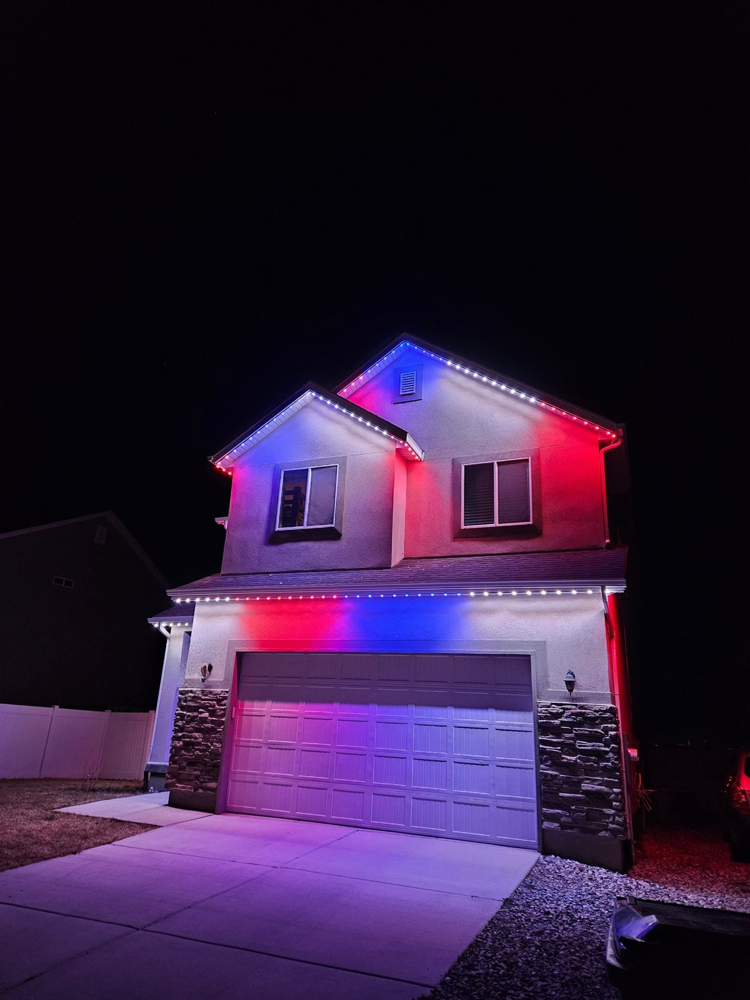
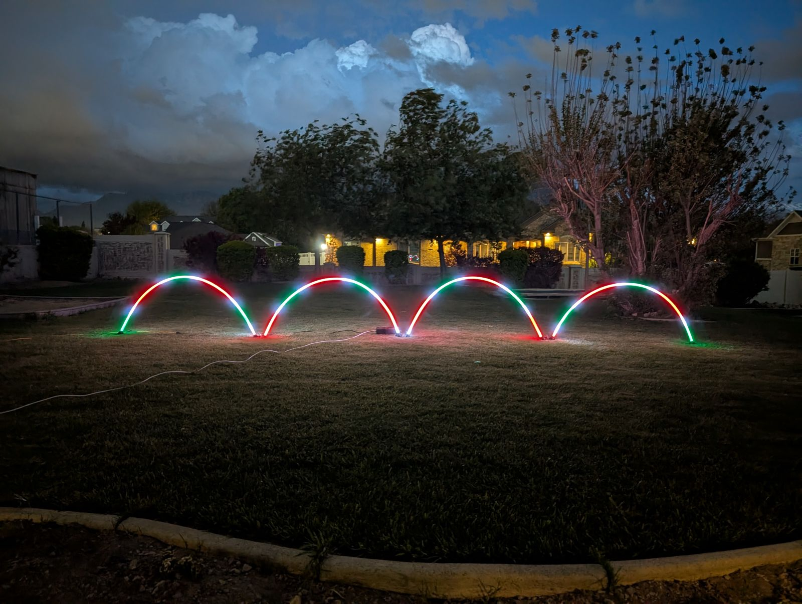
Each piece of the AFTERGLO system, from the board on the wall to the map in the sales rep's pocket.
| Item | Name | What it is | Built with | Status |
|---|---|---|---|---|
| 1.1 | Controller | The board that runs each install. Wired Ethernet first, four RGBW outputs, RS485, and a status screen. | ESP32-S3, KiCad 9 | Prototype |
| 1.2 | AFTERGLO app | One app for iPhone and Android: presets, a pattern builder, schedules, and presets written by AI from a description. | Flutter, Firebase, Claude API | On the App Store and Google Play |
| 1.3 | Firmware and web installer | A custom fork of WLED with remote updates locked down, installed from the browser in a click or two. | WLED fork, then own firmware; ESP Web Tools | In service |
| 1.4 | House visualizer | Upload a photo of your house, place lights along the roofline, and see it lit before you buy. | HTML canvas, JavaScript | Built |
| 1.5 | Direct mail engine | Draw a box on a map, and every eligible house in it gets a postcard showing lights on their own home. | Street-level imagery, AI rendering, print-and-mail API | In design |
| 1.6 | Show system | Plays scheduled light shows with no PC attached, keeps several controllers in sync, and sends the music to car radios parked out front. | Raspberry Pi 4, Falcon Player, DDP and E1.31, FM transmitter | Working prototype |
Same idea, three names.
Forked the open-source WLED Android app and rebuilt its look from the ground up, with a new name, icon, and mountain-dusk color scheme. Gave it its own package name and signed a release build for the Play Store.
First website and the house visualizer, a lead magnet that lets homeowners try lights on a photo of their own house.
Custom controller board, a single Flutter app replacing two native ones, a browser-based firmware installer, and the sales tools: Porchlight and the direct mail engine.